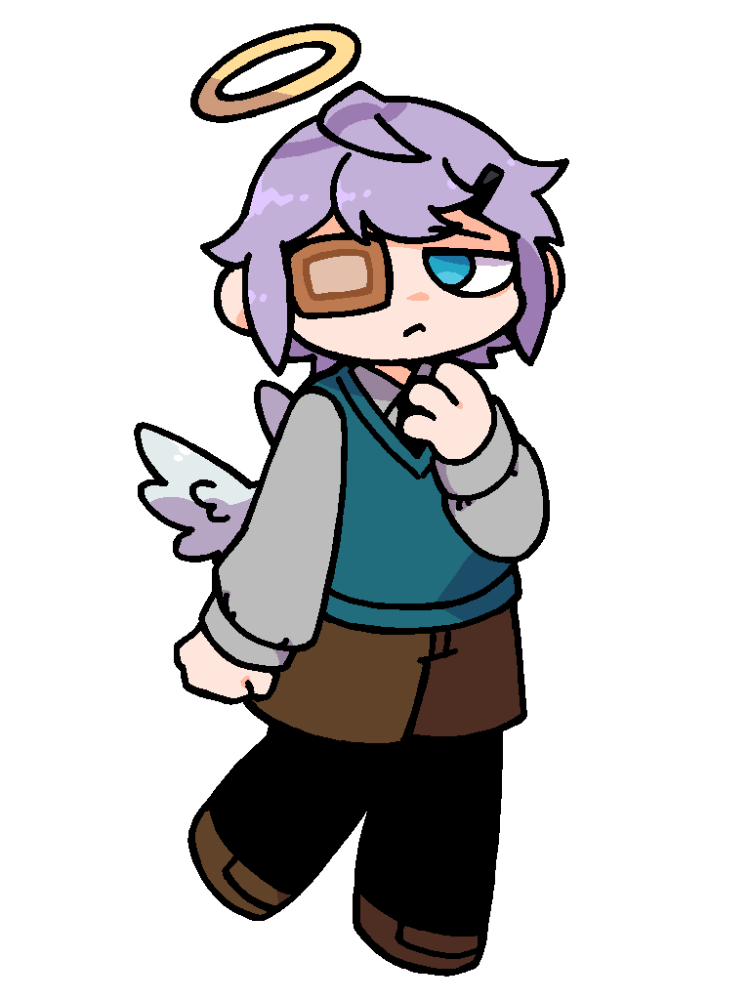

内気で大人しいテンシ。高い魔力を持つ家系に生まれた、名家の子息。魔法の勉強が大好きで、一番得意なのは氷魔法。寒さには強いけど、暑さにはめっぽう弱い。目が片方しか無いのがコンプレックスで、絆創膏で隠している。もっと勇敢になりたいと思っているけれど、怖がりでホラーが大の苦手。
【性別】男性
【一人称】僕
【身長】166cm
【好きなもの】魔法 / 雪 / マカロニサラダ
【苦手なもの】オバケ / 辛いもの